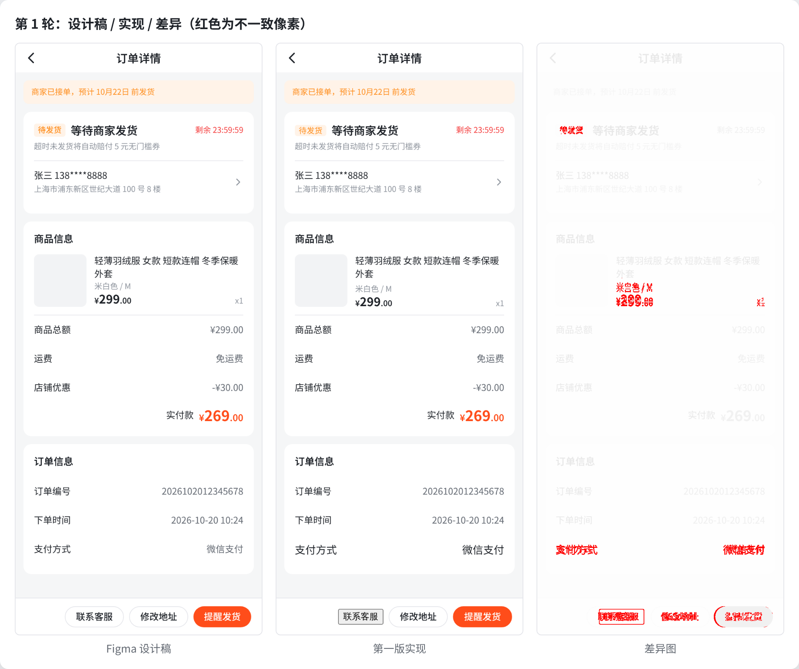

figmafe（Go）+ Skill figma-to-code + H5 / Android Demo + 教程figmafe verify。它输出复用率、违规、像素差异和节点级偏差，可以直接接入 CI。figmafe verify 量出现状（这是 demo 无法替代的一步），再推广到 PR CI。scan：两端组件、props、变体、示例、使用次数、token、存量坏实践map suggest/check：Figma ↔ H5 / Android；输出缺口、变体不支持、token 漂移plan：节点 → 组件 → 可粘贴的代码；人确认后才写verify：静态审计 + 截图 + 像素 / 节点比对，最多修 3 轮rules.md 和组件问题清单，下个页面直接受益| Proposal 要求 | 落地方式 | 业界依据 |
|---|---|---|
| 梳理 Figma 与组件的对应关系 | component-map.yaml（两端实现、变体 → props、文本图层 → 属性、约束、缺口决策）；map suggest 按名称、同义词和变体结构打分给出候选 | Figma Code Connect 的多平台映射思路；Brad Frost 的 Interface Inventory |
| 位置、示例、约束放进 Context | catalog 从资产清单和映射生成组件手册，Skill 通过渐进式加载读取 | Storybook Component Manifest；Mística 随 npm 包附带 llms.md |
| 开发前识别复用、确认方案 | plan 输出复用方案和待决项，Skill 规定必须先确认 | Figma MCP 推荐的「先查映射再生成」 |
| 开发后检查组件、截图对照 | audit（原生元素、直接用 Material、Legacy 组件、写死颜色、疑似自造组件）+ diff（像素 + 文本、组件节点级偏差） | pixelmatch、Roborazzi、Compose semantics、设计系统 lint |
| 偏差反馈给 Agent 修正 | report.md 每条偏差带文件行号或 Figma 节点 id、期望值和实际值；退出码 3 表示未达标，Agent 照着修 | Agent Skills：确定性的步骤交给脚本 |
| 先验证一个页面，再整理成规则 | 订单详情页两端都验证过；规则合并进 rules.md，组件问题汇总到 component-issues.md | — |
安卓端：组件用 Compose 实现，只用 Compose 1.2 已有的 API（对应 compileSdk 32 / minSdk 23）；扫描同时支持 XML View（attrs.xml、layout）。本环境装不了 Android SDK，所以用 Compose Desktop 在 JVM 上渲染（API 相同）。真实项目把渲染器换成 Roborazzi 或 Paparazzi 即可，对比逻辑不用改。
同一份 Figma（订单详情，含 21 个组件实例、1 个缺口组件 CountDown）、同一套组件库、同样的任务描述。每次运行都在独立的工作区里完成，最后用同一版 figmafe verify 统一打分。C 组的方案闸门在实验中视为自动通过。
| 组 | 端 | 结果 | 复用率 | 违规 | 像素差异 | 节点偏差 严重/轻微 | 自造 CountDown | Figma id | 耗时 / token |
|---|---|---|---|---|---|---|---|---|---|
| A 基线 | H5 | PASS | 100% | 0 | 0.65% | 0 / 5 | 是 | 0 | 90s / 89k |
| A 基线 | H5 | PASS | 100% | 0 | 0.65% | 0 / 5 | 是 | 0 | 104s / 99k |
| A 基线 · npm 包 | H5 | PASS | 100% | 0 | 0.65% | 0 / 5 | 是 | 0 | 104s / 95k |
| A 基线 · 只给截图 | H5 | PASS | 100% | 0 | 0.65% | 0 / 5 | 是 | 0 | 275s / 106k |
| A 基线 · Haiku | H5 | PASS | 100% | 0 | 0.65% | 0 / 5 | 是 | 0 | 96s / 93k |
| C 完整 Skill | H5 | PASS | 100% | 0 | 0.65% | 0 / 5 | 否 | 27 | 212s / 123k |
| C 完整 Skill · npm 包 | H5 | PASS | 100% | 0 | 0.65% | 0 / 5 | 否 | 27 | 186s / 102k |
| A 基线 | Android | FAIL | 100% | 0 | 4.00% | 2 / 6 | 是 | 28 | 143s / 105k |
| A 基线 · 只给截图 | Android | FAIL | 100% | 0 | 4.00% | 2 / 6 | 是 | 0 | 245s / 114k |
| C 完整 Skill | Android | FAIL | 100% | 0 | 4.00% | 2 / 6 | 否 | 27 | 301s / 129k |
复用率 = 方案要求的组件中实际用到的比例（静态统计，并用运行时的 data-ds 和 semantics 标记复核）。阈值：复用率 ≥95%，违规 0，像素差异 H5 ≤3%、Android ≤5%，节点级严重偏差 0。

| 发现 | 来源 | 处理 |
|---|---|---|
Android color.warning 是 #FF8800，Figma 是 #FF8F1F（token 漂移） | map check | 组件库修正 |
Android DsBadge 缺 Solid 变体；LegacyCellView 不支持副标题 | map check / scan | 补变体或在 Figma 上标注 |
| CountDown：Figma 有、两端都没有 | map check / plan 待决项 | 登记需求，本期按静态文本实现 |
| Android 同时存在 Compose（Ds*）和 XML View（Legacy*）两套资产 | map suggest 给出并列候选 | 决策：新页面只用 Compose |
| H5 Primary 按钮宽 2px、Tag 贴顶、ProductCard 内容下移 4px；Android DsPriceText 高度、DsGoodsCard 规格行重叠 | verify 节点级偏差（A、C 组一致） | 见 docs/component-issues.md |
存量 XML 页面里有原生 <Button>，并写死了 #FF4D1A、14sp | scan 存量问题（基线） | 迁移 |
figmafe fixture），格式和插件导出一致；插件代码没有在真实 Figma 里跑过。| # | 动作 | 产出 |
|---|---|---|
| 1 | 用插件导出组件库和一个典型页面（例如开户或交易的某一页） | design/figma-export/ |
| 2 | 修改 figmafe.yaml，指向真实的 H5 组件库（源码或 npm 包的 .d.ts）和 Android 组件库（Compose 或 XML View） | 资产清单和存量问题基线 |
| 3 | map suggest → 组件 owner 确认 → map check | 映射文件、缺口 / 漂移清单 |
| 4 | A / C 对照各跑 3 次，量出真实项目的复用率和偏差 | 真实的 before / after 数据 |
| 5 | verify 接入 PR CI；rules.md 随页面增多持续积累 | 可持续的规则和门禁 |
详细步骤和每一步的截图见 docs/tutorial/README.md；数据见 experiments/（每次运行的报告、截图、源码）；重新生成：python3 experiments/summarize.py && python3 docs/tools/build_report.py && node docs/tools/shoot.mjs html docs/report.html docs/report.pdf。